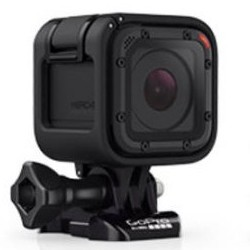
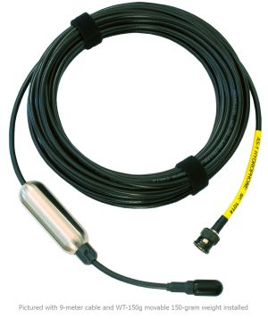
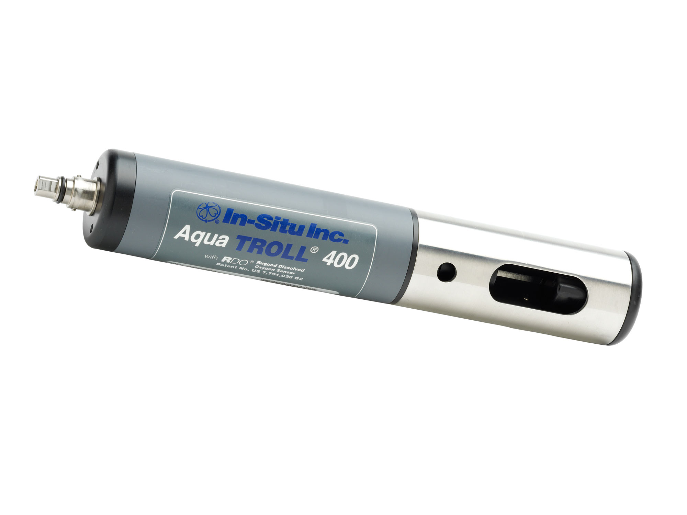

Sensors and Tools Supported by USV Raider 2
Autopilot of USV Raider 2 uses multiple on-board sensors, including GPS, accelerometer, gyroscope, magnetometer, anemometer, thermometer, and barometer.
In adition, up to 30 lbs. of mission-dependent load such as cameras, sonars, hydrophones, and basic water quality sensors, along with winches or gimbals could be mounted on the USV.
The sensors and actualtors are powered by the onboard 12v power supply.
Data streams from the sensors are recorded and managed by the onboard computer.
|  |
Camera
GoPro HERO camera with 1080p video video and 8 megapixel photo capture. The camera can be used for both underwater and above surface photo/video capture. |
 |
Sonar
Deeper dual frequency portable sonar fish finder for fresh and salt water operation. |
|  |
Hydrophone
Broadband measurement AS-1 hydrophone designed to provide maximum sensitivity in a small size while also providing a linear response in the bandwidth of the highest-quality commercial digital sound recording interfaces. |
|  |
Water Quality Sensors
SmarTROLL multiparameter water quality sensors record conductivity, pH, ORP, dissolved oxygen, water level/pressure, salinity, total dissolved solids, resistivity, density, air and water temperature, and barometric pressure. |